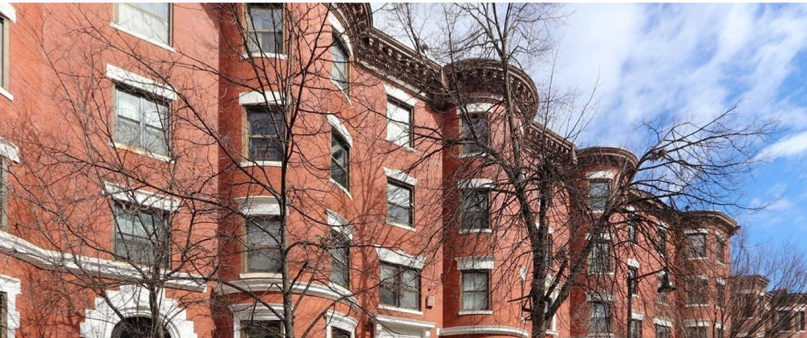

Albert Henry DeSalvo nasce a Chelsea il 3 settembre 1931 e muore a Walpole il 25 novembre del 1973; è stato un serial killer statunitense; la sua prima cattura avvenne quando egli aveva solamente 12 anni e continuò negli anni successivi ad entrare e uscire dal riformatorio. Ad oggi è conosciuto anche come “Lo strangolatore di Boston”
Biografia
DeSalvo nacque a Chelsea in Massachusetts da Frank e Charlotte DeSalvo. Suo padre era un immigrato italiano e la madre una immigrata irlandese. Il padre era un violento alcolizzato , finendo anche due volte in carcere per maltrattamento prima di divorziare definitivamente nel 1944. L'uomo inoltre costringeva il figlio ad assistere mentre egli aveva rapporti sessuali con delle prostitute che si portava a casa di tanto in tanto.
Da bambino, DeSalvo si divertiva a torturare gli animali, e da adolescente iniziò a praticare piccoli furti, avendo frequentemente a che fare con la legge. Nel novembre 1943, il dodicenne DeSalvo fu arrestato per furto con scasso per la prima volta. Nel dicembre dello stesso anno, egli venne mandato al riformatorio di Lyman. Nell'ottobre 1944 fu rimesso in libertà sulla parola ed iniziò a lavorare come ragazzo delle consegne. In questo periodo iniziò ad emergere in DeSalvo l'insaziabile appetito sessuale che lo contraddistinguerà per tutto il resto della vita.
Nell'agosto 1946 fece ritorno a Lyman per aver rubato un'auto. Dopo aver scontato la seconda condanna, DeSalvo entrò nell'esercito e venne inviato di stanza in Germania dove sposò una ragazza tedesca che poi portò con sé negli Stati Uniti. Egli fu congedato con onore dopo il suo primo periodo di servizio. Reintegrato nuovamente, rischiò di essere messo sotto processo dalla corte marziale per aver molestato sessualmente una bambina di 9 anni, ma nonostante ciò, nel 1958 DeSalvo fu congedato con onore dall'esercito una seconda volta.
Il 17 marzo 1960 DeSalvo venne arrestato con l'accusa di furto e condannato a scontare due anni di carcere. Uscì dietro concessione della libertà condizionata dopo undici mesi di detenzione.

Gainsborough Street: luogo del primo omicidio attribuito allo Strangolatore di Boston
Gli omicidi e il modus operandi
Nel periodo tra il 14 giugno 1962 e il 4 gennaio 1964, 13 donne nubili di età compresa tra i 19 e gli 85 anni furono assassinate a Boston e dintorni; e gli omicidi furono attribuiti alla fantomatica identità dello strangolatore misterioso di Boston. La maggior parte delle donne uccise fu violentata nella propria abitazione, e poi strangolata con capi di vestiario come calze, sciarpe, sottovesti. La vittima più anziana morì per infarto. Due altre furono accoltellate a morte, e una di queste dopo essere stata selvaggiamente picchiata. Senza alcun segno di scasso segnalato, le donne probabilmente conoscevano l'assassino oppure lo fecero entrare volontariamente nelle loro case.
Il 27 ottobre 1964, uno sconosciuto si introdusse nell'appartamento di una giovane donna a East Cambridge fingendosi un detective della polizia. L'uomo legò la vittima al letto, la violentò ripetutamente, chiedendole poi "scusa" prima di andarsene. La descrizione dell'aggressore data dalla donna guidò la polizia a identificare l'assalitore in Albert DeSalvo e quando la sua foto finì sui giornali, molte altre donne lo riconobbero come loro molestatore. La polizia lo arrestò il 3 novembre seguente.
DeSalvo non fu inizialmente sospettato di essere coinvolto negli omicidi dello strangolatore. Solamente quando venne incriminato per svariate violenze carnali che aveva compiuto negli anni guadagnandosi i soprannomi di "uomo delle misure" e "uomo verde" , diede una dettagliata confessione della sua attività di assassino. Infatti il giovane la accompagnava in chiesa, svolgeva volentieri le faccende domestiche e fu assunto come flebotomo presso il Milwaukee Blood Plasma Center per dieci mesi.
Uno dei compagni di cella di DeSalvo fu George Nassar, psicopatico e grande manipolatore. Durante le lunghe ore in compagnia tra di loro, nacque l'idea: lo strangolatore di Boston era quasi una star, e allora perché non sfruttare la popolarità dello strangolatore per scriverci un libro e guadagnare un mucchio di soldi dai diritti e dalle interviste? DeSalvo chiese quindi di parlare con Francis Lee Bailey, avvocato di Nassar, a lui confessò di aver ucciso non undici, ma tredici volte, fornì dettagli sulle vittime, sul modo in cui le aveva aggredite e uccise e sulle caratteristiche delle case in cui vivevano che soltanto l'assassino poteva conoscere tanto accuratamente, ma i testimoni non riconobbero in DeSalvo l'uomo che avevano visto sui luoghi del delitto.
Lo psicologo Ames Robey, che esaminò DeSalvo in carcere, conclude che l'uomo aveva due caratteristiche particolari: una notevole memoria per i dettagli e una importante sindrome narcisistica, per cui doveva essere al centro delle attenzioni. La giuria non credette che DeSalvo fosse lo Stupratore di Boston ma fu condannato comunque per le violenze sessuali.
Quello dello "strangolatore di Boston" almeno ufficiosamente, rimane ancora un caso misterioso. Il profilo criminale dello Strangolatore di Boston porta invece direttamente a George Nassar.
Aggiornamenti importanti arrivarono l'11 luglio 2013, quando la polizia di Boston annunciò che l'esame del DNA dello sperma ritrovato all'epoca sulla scena del delitto, aveva collegato Albert DeSalvo allo stupro ed omicidio della diciannovenne Mary Sullivan. I resti di DeSalvo furono esumati e gli investigatori trovarono un'esatta corrispondenza con il suo DNA. Il 19 luglio 2013, il commissario della polizia di Boston Edward F. Davis dichiarò che il test del DNA non lasciava dubbi che DeSalvo fosse la fonte del liquido seminale rinvenuto sulla scena del crimine nel 1964, dichiarandolo quindi responsabile certo della morte di Mary Sullivan, attribuita allo "Strangolatore di Boston".

George Nassar, compagno di cella di Albert DiSalvo
Mary Sullivan, vittima di Albert DiSalvo
Detenzione e morte
Nel febbraio 1967, DeSalvo riuscì a fuggire insieme a due altri detenuti dal manicomio criminale nel quale era rinchiuso, scatenando una caccia all'uomo, pochi giorni dopo venne ricatturato fu immediatamente trasferito al penitenziario di massima sicurezza di Walpole, dove il 25 novembre 1973, venne rinvenuto cadavere pugnalato a morte nell'infermeria, ucciso da mano ignota. È sepolto nel Puritan Lawn Memorial Park di Peabody, Massachusetts.

Arresto di Albert DeSalvo